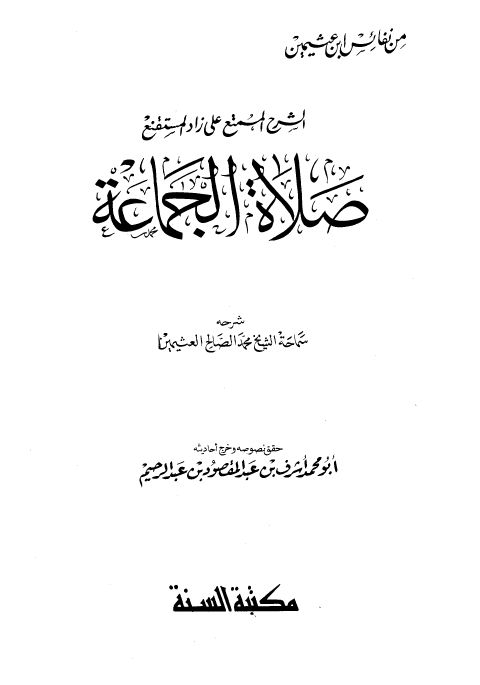

Downloads need an internet connection.
الشرح الممتع على زاد المستقنع صلاة الجماعة
Authors: محمد بن صالح العثيمين
Editors: أشرف بن عبد المقصود عبد الرحيم
Publishers: مكتبة السنة
**▫️ العنوان: الشرح الممتع على زاد المستقنع صلاة الجماعة** ▪️ المؤلف: #محمد_بن_صالح_العثيمين ▫️ المحقق: #أشرف_بن_عبد_المقصود_عبد_الرحيم ▪️ الناشر: #مكتبة_السنة ▫️ تاريخ النشر: 1415هـ 1995م ▪️ بلد النشر: القاهرة، #مصر ▫️ الطبعة: 1 ▪️ عدد الأجزاء: 1 ▫️ الصفحات: 286 ▪️ نوع الوعاء: #كتاب ▫️ التصنيف الرئيسي: #الفقه_وأصوله ۪